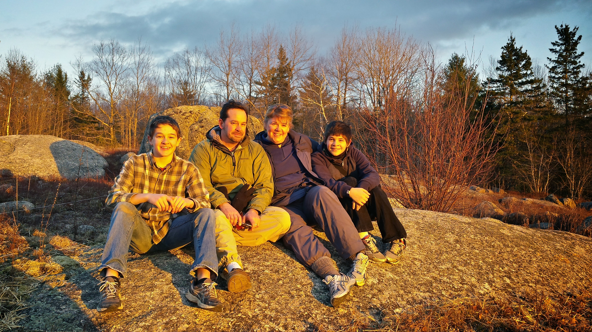

I was born in Nashua, New Hampshire on June 4th, 1998. My parents' names are Kristen and Christopher LaRiviere, and I have a brother, Nathan, who is two years younger than I am. We lived in Cornish Flat, New Hampshire during my early childhood. I have many fond memories of building forts in the woods with my brother, and playing in the treehouse Dad built for us in the backyard. We spent a lot of time together as a family, going on hikes, bike rides, skiing, or just hanging out playing games.
My family moved to Sullivan, Maine when my dad switched careers. He was working for Fluent Incorporated as a fluid dynamics modelling software salesman, when he decided he was tired of the corporate rat race, left his job, and bought a small boat yard in Maine. He took over the boat yard in Summer of 2007, which was right before the recession, so finances were marginal for quite a while. Gratefully the business survived, and it’s been getting a little easier every year since. I worked at the boat yard full time during my gap year between high school and college, which was a challenging but rewarding learning experience. After that, I started work on my degree in business management at the University of Maine at Orono.